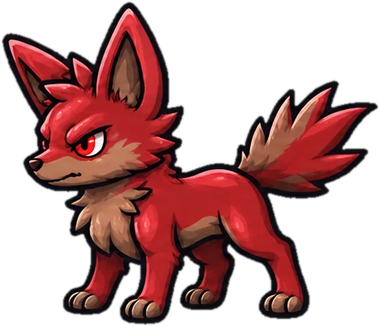

Tap a stage to read its story.
A small, vividly crimson-red fox-puppy with a bushy tail and bright red eyes, Thornmite darts through the Dragon Spire's lower shadow-corridors in swift zigzag bursts that confuse the eye. Its fur is a deep blood-red with slightly darker patches, and its ears are oversized and radar-alert. Despite the ominous region, Thornmite is curious and bouncy - it has a habit of snatching small shiny objects and caching them in crevices. The Dragon Spire's records note that Thornmite tracks are found near every treasure cache, great and small, in the whole spire.
Field note: Thornmite caches stolen items in exactly seven separate spots and rotates between them, never returning to the same spot twice in a row.
Dragon Spire. Thornmite and its family are found in the Dragon Spire. See everyone who lives there.
Share a Bond Food that matches its types to become friends. Thornmite loves:
A Bond Food is not a trick. It joins your spirit with the Kimuro's spirit, and only when it chooses you.
Print the Kimuro adventure packs: mazes, cards, a board game and Bond Mark medals.
See the printable packs